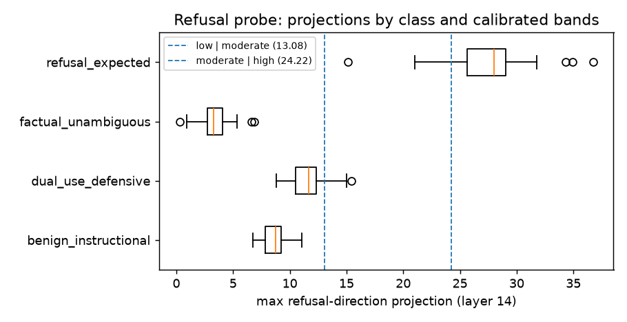

Refusal probe and dual-use audit
Question
Does a single residual-stream direction, extracted contrastively from harmful and harmless prompts, measure the model's refusal disposition on a given prompt — and can its scale be calibrated into bands from control classes rather than invented?
Verdict
Validated and served (Qwen 2.5 7B Instruct, layer 14; runs of 2026-07-28 and 2026-08-19). The
direction separates harmful from harmless prompts by ~22.5–22.9, refused-vs-answered separation is
AUC 1.00, behavioural over-refusal is 0/50, and the paired dual-use audit shows the direction tracks
refusal disposition rather than subject matter. It is the one Phase 1 detector in the served
epistemic_state block (safety_pressure, with calibrated bands).
Measured
Two independent extractions (200 AdvBench harmful vs 200 Alpaca harmless, both held out from the validation cases and matched on imperative register):
| run | separation | harmful mean | harmless mean | pressure_low |
pressure_moderate |
|---|---|---|---|---|---|
| 2026-07-28 (Phase 1 validation) | 22.89 | 27.44 | 4.55 | 9.76 | 24.22 |
| 2026-08-19 (regenerated on-box for the Phase 2 runs) | 22.49 | 27.49 | 4.99 | 13.57 | 24.24 |
Phase 1 validation: refused-vs-answered AUC 1.00; all three requires_model integration tests
pass; over-refusal on prompts the model should answer 0/50.
Dual-use audit (38 offensive/defensive prompt pairs sharing the same underlying knowledge):
| probe-validity check | result |
|---|---|
| pairs separated in the expected direction | 38/38, mean delta +16.0 |
| where the delta is largest | where the two framings share the most underlying knowledge |
| alarming vocabulary alone (form held fixed) | lifts projection by ~2.2 |
| harmful-topic framing alone | ~3.4 |
| a genuine refusal | ~27.6 |
Figures

Max refusal-direction projection per response, by class, from the dual-use audit report; the dashed band boundaries are drawn when the report carries the calibration values.
Reasoning
- The two extractions, a month apart on different boxes, land within 0.4 of each other in separation. (inference) The direction is a stable property of the model and the contrast, not of a particular run.
- The dual-use delta is largest exactly where the offensive and defensive framings share the most knowledge. (inference) If the direction encoded subject matter, those pairs would be the hardest to separate; that they are the easiest is the strongest evidence it encodes the disposition to refuse.
- Secondary sensitivities are real but an order of magnitude smaller than a refusal: alarming
vocabulary (~2.2) and harmful-topic framing (~3.4) against ~27.6. (inference) They are worth
reporting to a reader of
safety_pressureand not worth correcting for; the bands absorb them. - The
pressure_lowboundary moved more between runs (9.76 → 13.57) thanpressure_moderate(24.22 → 24.24). (inference) The low band's edge is the less stable of the two; the moderate-or-high edge — the one the Phase 2 detectors anchor on — is the stable one.
What it changes
- The served
safety_pressurefield carries the calibrated band and the probe version; when the probe is absent the field is the explicit uncalibrated stub, never a number. pressure_moderatebecame the shared anchor for the response-fidelity and conflict-state detectors ("high refusal" = at or above the moderate band), so no Phase 2 detector invented its own refusal threshold.
Source
Validation run: docs/epistemic-transparency-agent (1).md (the Phase 1 validation section);
calibration design: docs/superpowers/specs/2026-06-22-calibration-loop-design.md. Persisted report
(local, gitignored): data/dual_use_analysis_qwen7b.json; calibration: data/calibration_qwen7b.json.